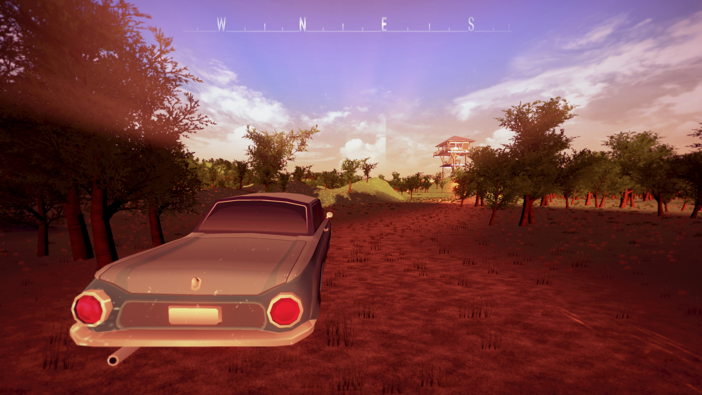
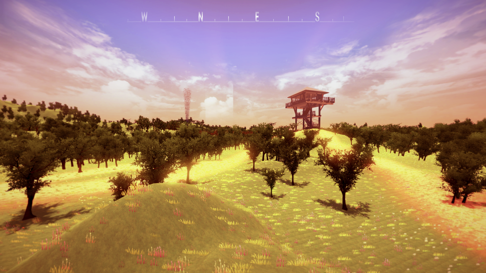
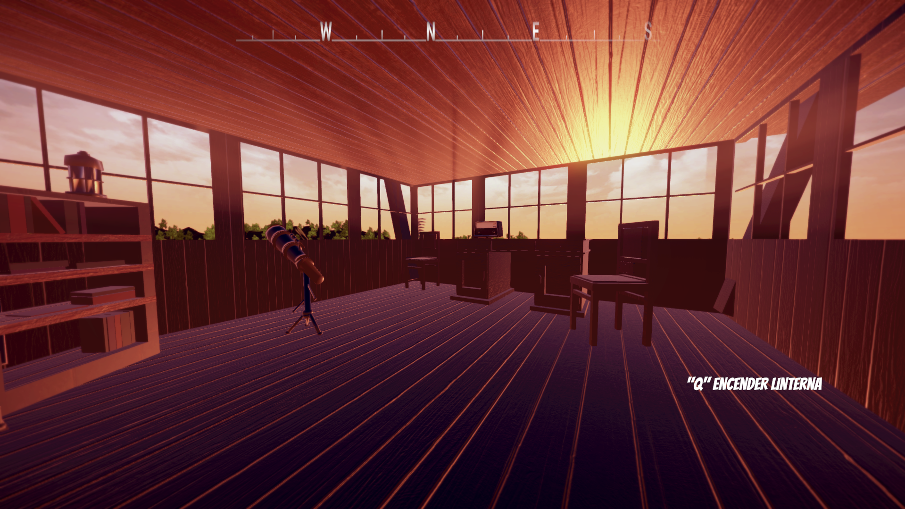
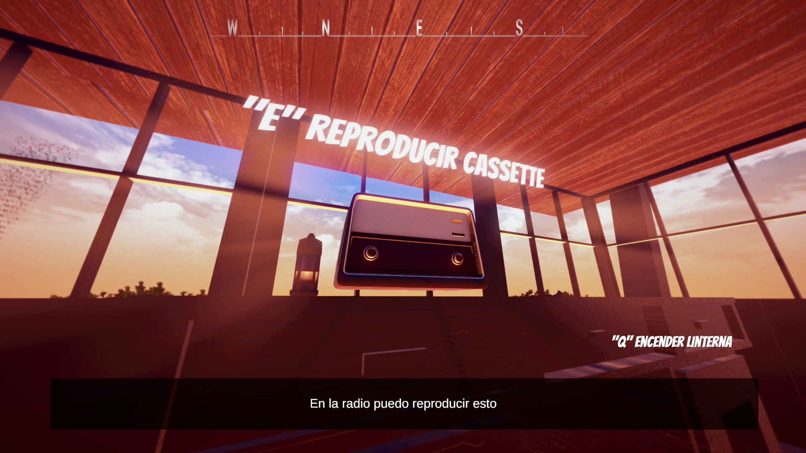
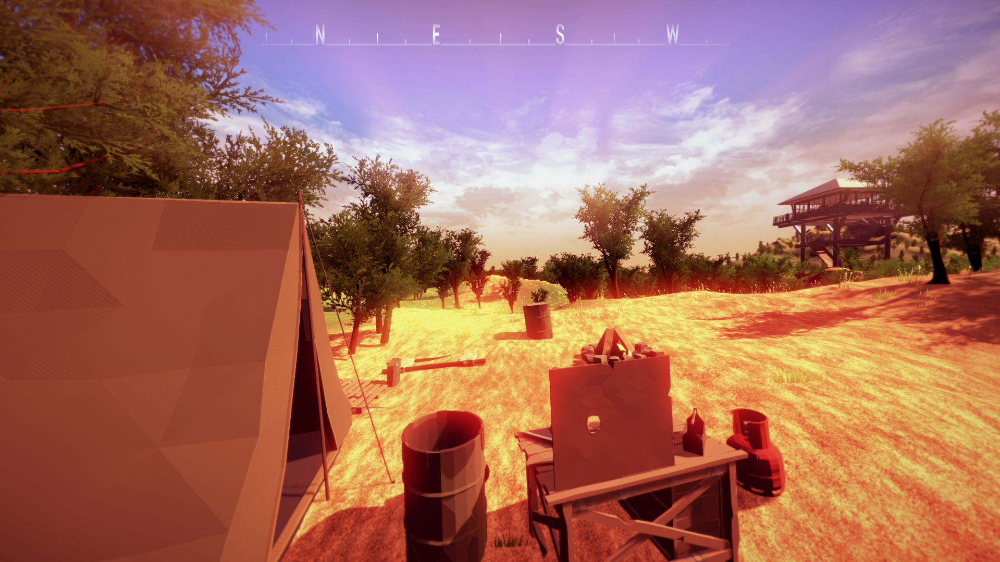
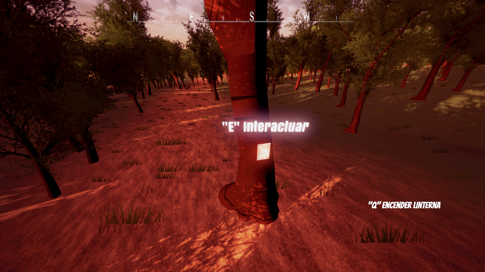
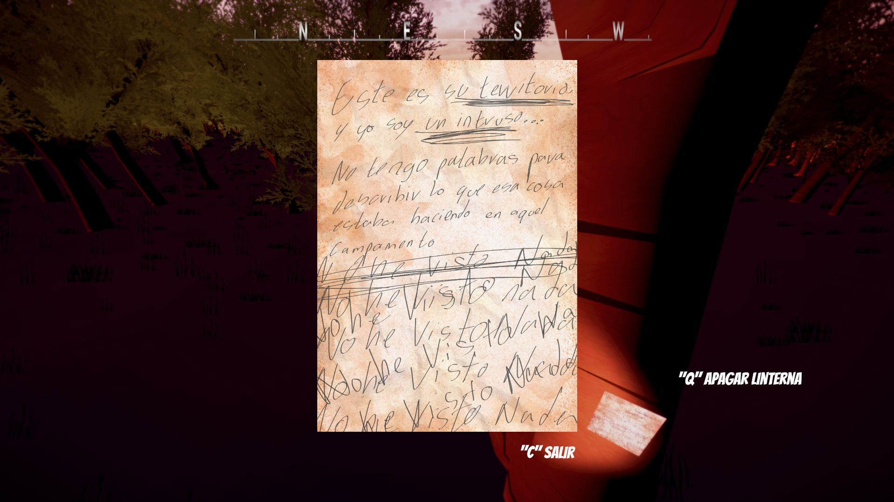

El Concepto
En este proyecto asumí el rol de desarrollador principal. El juego consiste en investigar el asesinato de un guardabosques en un entorno denso y oscuro. Mi objetivo principal fue crear una atmósfera de misterio y tensión constante a través del diseño de niveles y la narrativa ambiental.
Mi Rol y Retos
Me encargué de programar las mecánicas de investigación, las físicas del jugador y la interacción con objetos mediante C#. Uno de los mayores retos técnicos fue optimizar la iluminación volumétrica en Unity para que el bosque se viera oscuro y opresivo, pero sin perjudicar el rendimiento del juego.
Galería de Imágenes
Haz clic en las imágenes para ampliarlas:






